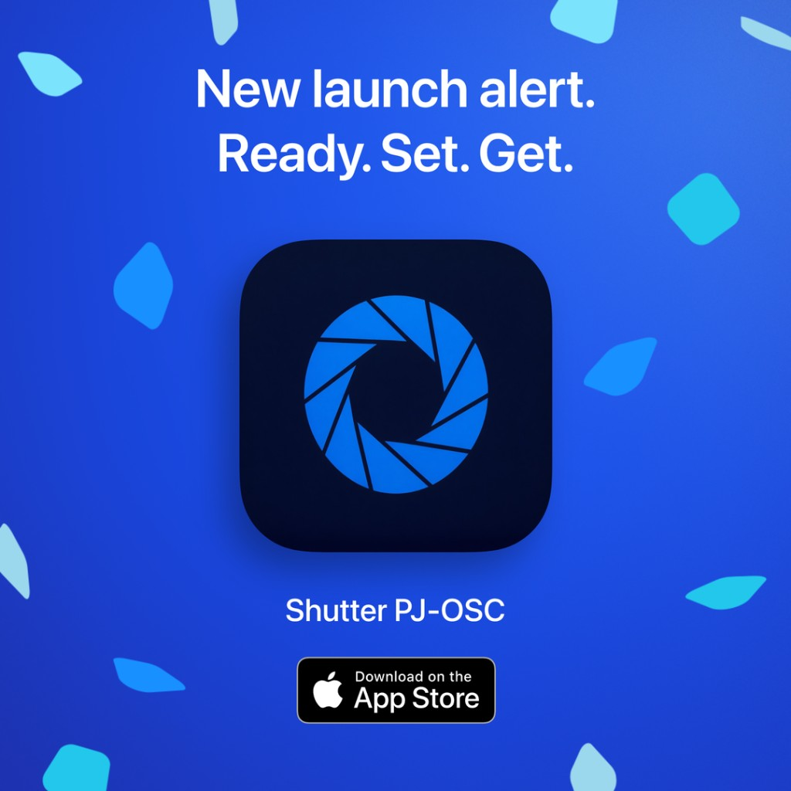

Accesible
Live-Barrierefreiheits-App fur QLab-basierte Shows.
Jetzt im Mac App Store. 7 Tage kostenlos für berechtigte neue Abonnenten; Details beim Kauf.
Spezialisierte Software fur Automatisierung, Barrierefreiheit und technische Workflows in Live-Produktionen.
Tools fur echte Backstage-Workflows mit QLab, OSC, PJLink und Digitalmischpulten.
Live-Barrierefreiheits-App fur QLab-basierte Shows.
Jetzt im Mac App Store. 7 Tage kostenlos für berechtigte neue Abonnenten; Details beim Kauf.
Steuert PJLink-Projektor-Shutter und Power per Buttons oder OSC.

Jetzt im App Store für Mac.
iPhone und Apple Watch: PJ-LINK direkt (TCP 4352) steht allein. OSC-Weiterleitung setzt Shutter PJ-OSC auf dem Mac voraus — installiert, eingestellt und laufend.
Jetzt im App Store für iPhone, iPad und Apple Watch.
Ubersetzt MIDI-Daten von Midas M32 / Behringer X32 in OSC-Befehle.

Jetzt im Mac App Store (macOS). TestFlight-Beta verfugbar.
Proben-App fur Schauspieler: synthetische Stichworte, Aufnahme der eigenen Stimme und gespeicherte Sessions, um den Fortschritt nachzuverfolgen.

Jetzt im App Store als StageWithMe. Die TestFlight-Beta bleibt fur Vorabversionen offen.
Diese Tabelle hilft dir, das passende Tool pro Produktionsaufgabe zu wahlen.
Vergleich ansehenPraxisnahe Workflows fur Projektion, Barrierefreiheit und Mixer-Automatisierung.
Anwendungsfalle ansehenDokumentationslinks und praktische Setup-Empfehlungen.
Ressourcen offnen